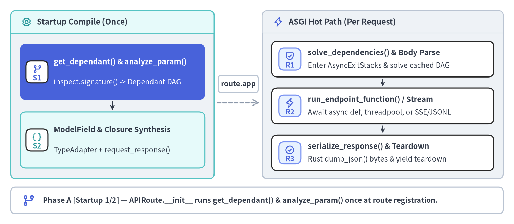
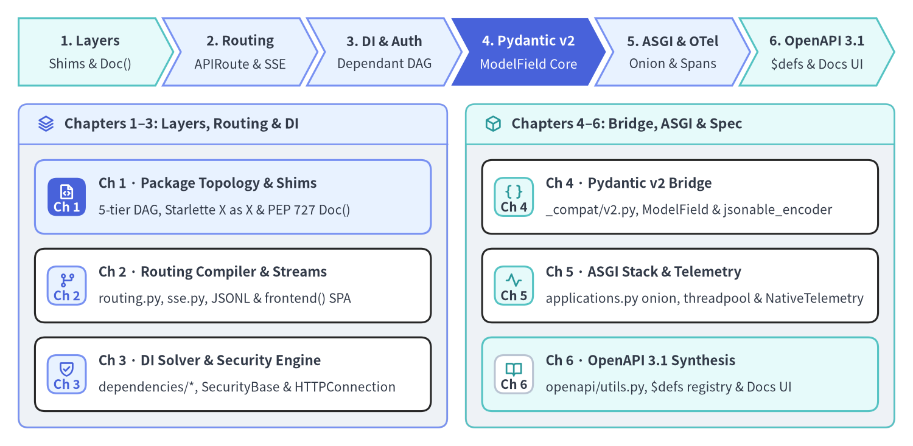

FastAPI v0.162.2 — 内部アーキテクチャガイド
FastAPI（v0.162.2 · Python モジュール 52 個 · 19,837 行 · 循環 import 0 件）は、再帰的な依存関係解決（DI）、Pydantic v2 による型検証・直列化、そして OpenAPI 3.1.0 自動合成を備えながら、素の ASGI サーバに迫るスループットを実現しています。その中核にある設計原則が 「起動時・import 時にリフレクション処理を 1 回だけコンパイルし、リクエスト実行時は軽量な束縛済みクロージャのみをディスパッチする（Compile-Once, Dispatch Closures）」 というアーキテクチャ不変条件です。本サイトは、アプリケーション設計パターンを扱う姉妹編 FastAPI ユーザーガイド と対をなし、FastAPI 本体のコンパイラ・解決エンジン・ASGI スタックの内部実装をソースコードレベルで解剖する非公式リファレンスです。

中核設計思想：起動時 1 回コンパイルと軽量クロージャ実行
HTTP リクエストのたびに inspect.signature() を呼び出し、文字列化された ForwardRef 型ヒントを評価し、Annotated[...] メタデータを走査してバリデータを生成する素朴なフレームワークでは、I/O ではなく Python の動的リフレクションで CPU 時間を消費してしまいます。FastAPI は ルート登録処理（@app.get、@router.post、include_router）を事前コンパイルパス（Ahead-of-Time Compilation）として扱う ことで、リクエスト処理中のリフレクションを完全に排除しています。
fastapi/routing.py の APIRoute.__init__ が _populate_api_route_state() を実行すると、エンドポイント関数の型ヒント群は静的なデータ構造へと即座に変換され、2 層のレキシカル ASGI クロージャ（self.app = request_response(self.get_route_handler())）の自由変数として封じ込められます。
| ライフサイクル段階 | 主要ソース関数（v0.162.2） |
生成・保持される内部オブジェクト | レイテンシと安全性への寄与 |
|---|---|---|---|
| 1. シグネチャ解析と DI グラフ構築（起動時） | get_dependant(), get_typed_signature(), analyze_param()（dependencies/utils.py） |
APIRoute.dependant（path_params, query_params, header_params, cookie_params, body_params, dependencies を持つ Dependant 木） |
inspect.signature() と evaluate_forwardref() を 1 回だけ 実行し、トラフィック受信前に DependencyScopeError（"request" 対 "function"）を検証。 |
| 2. 検証器・直列化器の事前合成（起動時） | create_model_field()（utils.py）, _get_body_field(), ModelField.__post_init__()（_compat/v2.py） |
body_field（mode="validation"）, response_field（mode="serialization"）, stream_item_field |
リクエストボディ・レスポンス・SSE/JSONL ストリーム要素向けに Rust 製 pydantic.TypeAdapter を事前構築。 |
| 3. ASGI クロージャ束縛（起動時） | APIRoute.get_route_handler(), get_request_handler(), request_response()（routing.py） |
APIRoute.app（ASGIApp 非同期コルーチンクロージャ） |
is_coroutine, is_body_form, is_sse_stream, is_json_stream などの分岐フラグをクロージャセル変数として事前確定。 |
| 4. スコープ付き DI 解決とボディ読取（リクエスト時） | request_response(), solve_dependencies()（dependencies/utils.py） |
SolvedDependency（values, errors, background_tasks, response, dependency_cache） |
fastapi_inner_astack（"request" スコープ）と fastapi_function_astack（"function" スコープ）を展開し、(call, scopes, computed_scope) キーで依存関数をメモ化。 |
| 5. 関数ディスパッチと Rust 一括 JSON 直列化（リクエスト時） | run_endpoint_function(), serialize_response(), ModelField.serialize_json() |
UTF-8 JSON bytes を直接格納した Response(media_type="application/json") |
response_class が DefaultPlaceholder(JSONResponse) かつ response_field が存在する場合、use_dump_json=True により中間 dict と json.dumps() を省略して TypeAdapter.dump_json() で一括バイト出力。 |
コンパイル済みルート状態とクロージャ階層の実行時検査
FastAPI は @app.<method>() デコレータ評価時点で上記すべての構造体を実体化するため、ASGI サーバを起動しなくても APIRoute インスタンスからコンパイル済みの Dependant DAG、ModelField 内の TypeAdapter、および入れ子になった ASGI クロージャセルを直接検査できます。
from typing import Annotated
from fastapi import Body, Depends, FastAPI, Header, Path
from fastapi._compat import ModelField
from fastapi.dependencies.models import Dependant
from fastapi.routing import APIRoute
from pydantic import BaseModel, TypeAdapter
class OrderCreate(BaseModel):
sku: str
quantity: int
class OrderOut(BaseModel):
order_id: int
sku: str
tenant: str
def resolve_tenant(x_tenant: Annotated[str, Header()]) -> str:
return x_tenant
app = FastAPI(title="Compile-Once Inspector", version="0.162.2")
@app.post("/orders/{order_id}", response_model=OrderOut)
async def create_order(
order_id: Annotated[int, Path(ge=1)],
payload: Annotated[OrderCreate, Body()],
tenant: Annotated[str, Depends(resolve_tenant)],
) -> OrderOut:
return OrderOut(order_id=order_id, sku=payload.sku, tenant=tenant)
route = next(
r for r in app.routes if isinstance(r, APIRoute) and r.path == "/orders/{order_id}"
)
# 1. Pre-built Dependant DAG (zero inspect.signature() calls at request time)
assert isinstance(route.dependant, Dependant)
assert [f.name for f in route.dependant.path_params] == ["order_id"]
assert route.dependant.dependencies[0].header_params[0].alias == "x-tenant"
# 2. Pre-compiled Pydantic v2 ModelField + Rust TypeAdapter instances
assert isinstance(route.body_field, ModelField) and route.body_field.mode == "validation"
assert isinstance(route.body_field._type_adapter, TypeAdapter)
assert isinstance(route.response_field, ModelField) and route.response_field.mode == "serialization"
# 3. Lexical ASGI closure chain: request_response -> get_request_handler
assert route.app.__qualname__ == "request_response.<locals>.app"
closure_objs = [cell.cell_contents for cell in (route.app.__closure__ or ())]
assert any(
getattr(fn, "__qualname__", "") == "get_request_handler.<locals>.app"
for fn in closure_objs
)
6大内部サブシステムと全9ページの構成マップ
全 52 ファイルからなる FastAPI v0.162.2 のコードベースは、責務の明確な 6 つの内部サブシステム に分割されており、本ガイドでは 全 6 章・9 ページ にわたって順次詳解します。

| 章 | 内部アーキテクチャ解説ページ | 解析対象モジュール（./fastapi/） |
|---|---|---|
| 1. パッケージ階層と境界設計 | 5層モジュール構造と Starlette 再公開 | __init__.py, types.py, params.py, param_functions.py, requests.py, responses.py, websockets.py, background.py, concurrency.py, middleware/* |
| 2. ルーティングコンパイラとクロージャ | APIRouter・APIRoute とクロージャ合成 · ジェネレータ配信と SPA ルータ内部実装 | routing.py（APIRouter, APIRoute, APIWebSocketRoute, get_request_handler, request_response, _RouterIncludeContext）, sse.py, applications.py（frontend()） |
| 3. DI 解決エンジンと認証機構 | Dependant グラフと solve_dependencies · SecurityBase 階層と HTTPConnection | dependencies/models.py, dependencies/utils.py, security/base.py, security/oauth2.py, security/http.py, security/api_key.py, security/open_id_connect_url.py |
| 4. Pydantic v2 ブリッジ層 | _compat/v2.py・ModelField・直列化 | _compat/__init__.py, _compat/v2.py, _compat/shared.py, encoders.py, utils.py（create_model_field） |
| 5. ASGI スタックとテレメトリ | ミドルウェア7層構造とスレッドプール · NativeTelemetry と例外スパン記録 | applications.py（build_middleware_stack, __call__）, middleware/asyncexitstack.py, concurrency.py, exception_handlers.py, telemetry/_asgi.py, telemetry/_api.py, telemetry/_runtime.py |
| 6. OpenAPI 3.1 合成エンジン | get_openapi()・$defs 集約・Docs UI | openapi/utils.py, openapi/models.py, openapi/docs.py, openapi/constants.py |
関連ポータルと上流プロジェクトへの謝辞
- 姉妹ポータルとの連携: 大規模モジュラーモノリス（
100,000+LOC）、OAuth2/JWT 実装、SQL セッション管理、本番運用パターンについては FastAPI ユーザーガイド を参照してください。また、静的 AST 解析・依存関係・セキュリティ品質評価（総合スコア93 / 100、評価Grade S）については PNI501 診断レポート を併せて確認できます。 - 上流プロジェクトへの敬意と帰属表示: FastAPI は Sebastián Ramírez（
@tiangolo） 氏および FastAPI コミュニティによって MIT ライセンスの下で開発・保守されています。公式ドキュメントおよびリリースノートについては必ず https://fastapi.tiangolo.com/ を参照してください。まずは 第1章：5層モジュール構造と Starlette 再公開 から、循環参照ゼロのパッケージ設計を読み進めましょう。